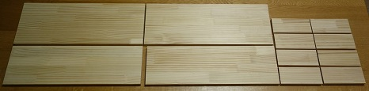
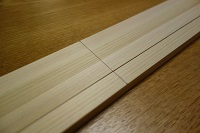
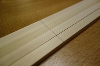
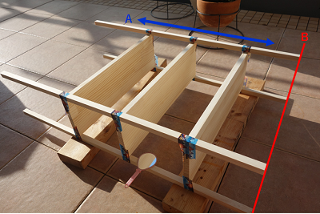
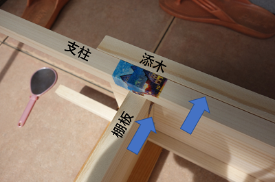
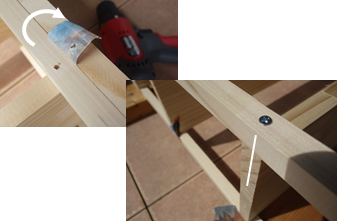

キッチンの背面収納とその横の冷蔵庫の間にあるデッドスペースをハンドメイドの棚で埋めます．

1 準備
今回作成する棚のデザインです．

4本の支柱は，15mm角のヒノキ材，その他の板材は，15mm厚のクリアパイン集成材から取ります．各部材の取り方は以下のようにしました．




支柱には，棚の位置を示す墨入れを行いました．
 

最後にキャスターです．

2 組み立て
各部材を組み立てていきます．
まずは，4本の支柱と3枚の棚板をマスキングテープで仮付けします（下図）．先に支柱に墨入れした線を棚板がおよそ半分隠すところで固定します．このとき，図中のAで示した垂直方向に棚板の位置が固定されます．また，Bで示した支柱の先端は同一平面上にあるはずです．棚板の位置合わせとのときに，上側の支柱の墨は直接目視できないので，図内にあるような小型の手鏡を使うと便利です．

仮付けした棚板を固定していきます．木ねじで固定するためのガイドとなる穴(2.5mmΦ)を電動ドリルで空けていきます．先ほど，マスキングテープで支柱と棚板を垂直方向には固定しましたが，水平方向には遊びがあります．そこで，別の棚板を添えて，支柱と棚板をそれに押し当てることで水平方向の位置を合わせます．そして，マスキングテープの上から，支柱と棚板に一気に穴を空けます．

ガイド穴が空いたら，マスキングテープを支柱の壁面からはがして，ガイド穴を露出させます．3.1mmΦの木ねじで固定します．ガイド穴に従って，支柱と棚板は自動で位置が調整され，支柱と棚板の小口が同一面上に揃います．

支柱と棚板の固定が終わったら，底板と天板を取り付けます …